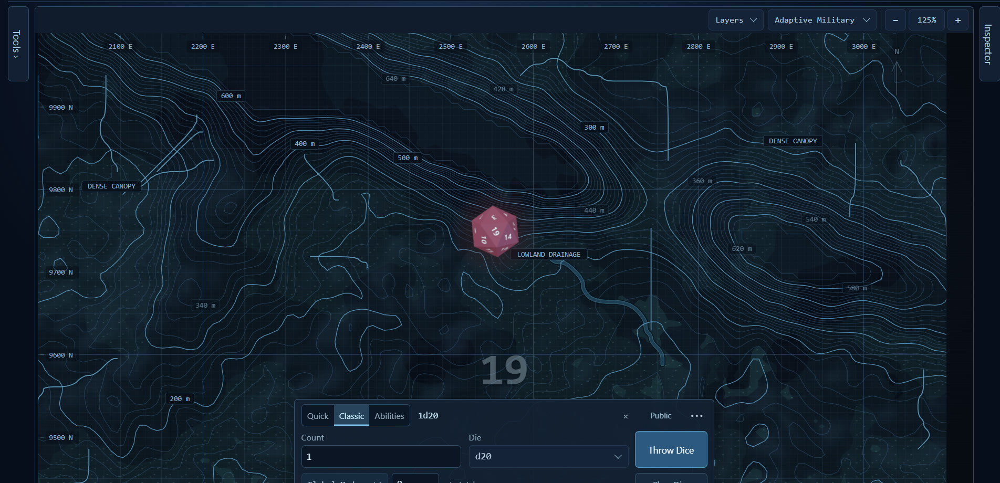
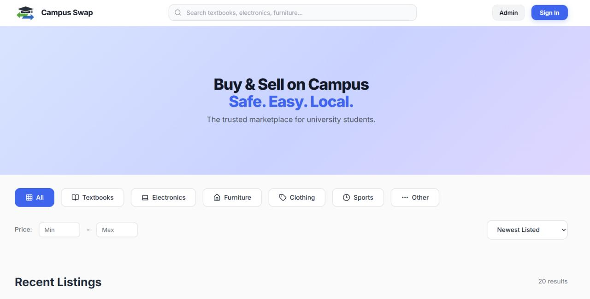
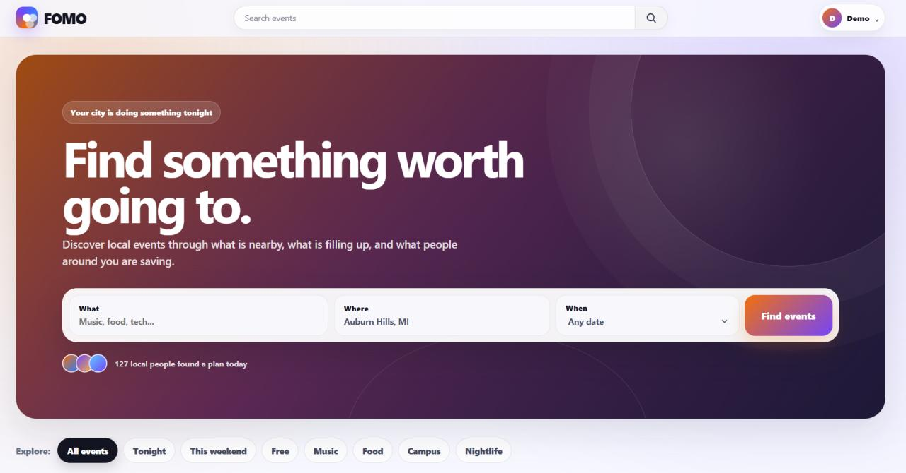
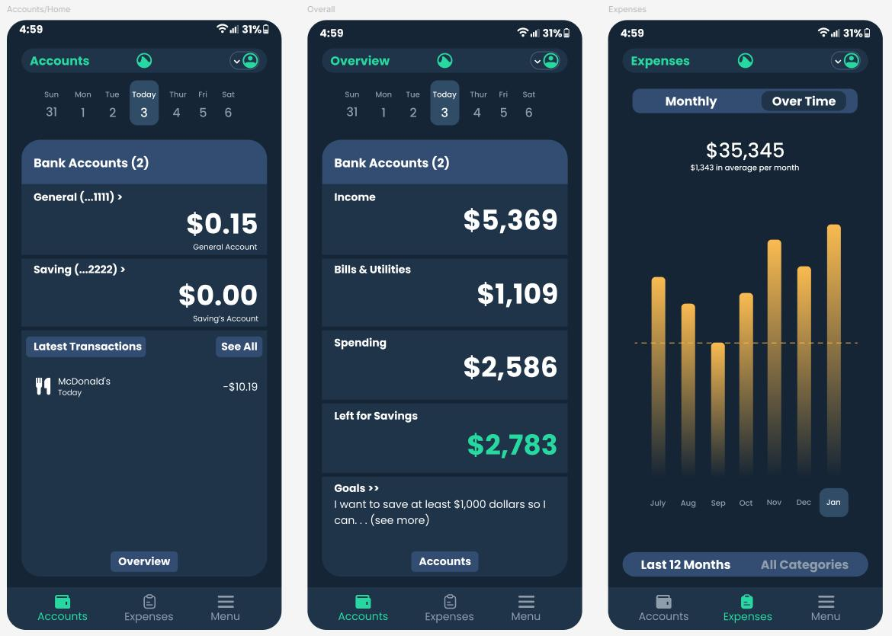

Cast and Current
A 3D fishing simulator where fish react to how you move your lure.


Early alpha demo3D version in development
A 3D fishing simulator where fish react to how you move your lure.
A cross-platform tabletop where friends move pieces and roll dice on a shared map.

ShiftOps helps maintenance crews report broken equipment, track repairs, and leave notes for the next shift.
View codePackaging Conveyor A · Plant A
The operator reported two unexpected stops.
Follow a conveyor repair from the dashboard through the technician’s completion note. Silent recording.
In my sophomore year, I led the development of this fighting game where you dodge enemy attacks and time your counterattacks.
View codeI led our senior capstone team in building a marketplace where students buy and sell used items on campus.
View code

A mobile budget tracker that shows your balances, recent purchases, and spending by month.
